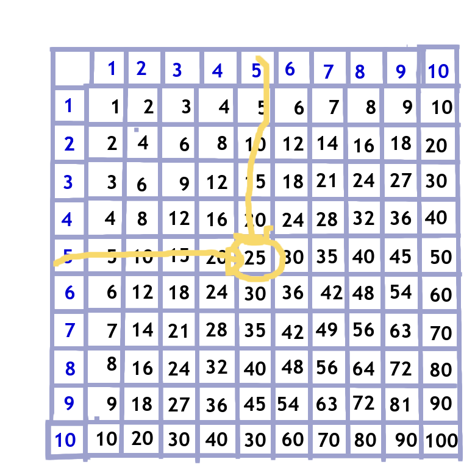

This web project is designed to help people who for any of a number of reasons haven't gotten the times tables learned (some or all of them), and are willing to try some lessons and practice.
I've also been working on videos for folks who want to be able to add and subtract mentally, but kept hearing from people looking for resources to *learn* the times tables, as opposed to practice them.
Finally, I think the Open Educational Resource community is starting to embrace the idea that we *can* create good interactive experiences with CSS and HTML5 and JavaScript.... but... I'm trying to figure out where and how :) I've put a project up with the Rebus Community; in past years I've participated in adult ed OER projects and I'm looking for more.
Here's the intro video: yes, they are all short! The transcripts and screenshots are underneath...links will be along the side to the powerpoints I made the videos from.

Mastering Multiplication: These are the times! Let's get to the facts!

I’d like to introduce you to multiplication.
Multiplication is where, for lots of people, math became something to memorize. Well, memorizing is a good thing, and that’s a big part of this little course.
We’re going to approach it, though, from understanding numbers and how they work. It’s like riding a bike or driving a car – it’s good to know how to use it, but it’s even better to understand how it works.
Why should you bother?
It’s an investment – work harder now, work easier later. especially because understanding makes the brain remember things better. You just might surprise yourself.
1
1
1
Here are the times tables lined up in a chart. To find 5 x 5 we find where the 5 column and 5 column cross --
BUT! We want to get to where you don’t even need to use a chart. 5 x 5 will always be 25... We’ll use this to keep track of the ones you’re learning.
There are 121 facts on the chart – next lesson – knocking off the first 21